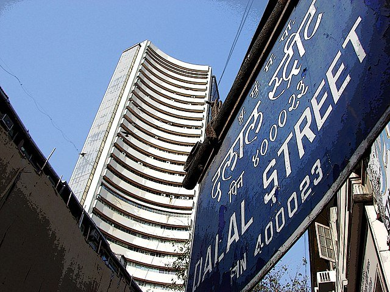

National Income Aggregates & Economic Planning of India
An exhaustive, high-yield guide to India's macroeconomic architecture: GDP, GNP, NNP at Factor Cost, per capita income formulas, Dadabhai Naoroji's first estimates, the 12 Five-Year Plans (1951–2017) matrix, and the NITI Aayog paradigm shift for UPSC, APSC & State PSCs.
1. National Income Concepts & Macroeconomic Aggregates
Measurement of economic output, value added, factor costs, and inflation adjustments

Capital Formation & Economic Growth (Dalal Street, Mumbai)
National Income aggregates measure the monetary value of goods and services produced, reflecting capital accumulation, per capita welfare, and productivity.
Gross Domestic Product
Total monetary value of all final goods and services produced within the domestic geographical territory of a country during a year, regardless of whether produced by citizens or foreign residents.
Gross National Product
Total value of goods and services produced by the normal residents of a country, regardless of where they are located. Includes net income from abroad.
National Income (True Measure)
Net National Product at Factor Cost. Deducts wear and tear (depreciation) and net indirect taxes (Indirect taxes minus subsidies) from GNP.
Per Capita Income
Average income earned per person in a given country in a specified year. Evaluates the standard of living and economic well-being of the population.
Milestones in India's National Income Estimation
2. Genesis of Economic Planning in India (Pre-Independence)
From Sir M. Visvesvaraya's 1934 vision to the Sarvodaya Plan of 1950
Visvesvaraya Plan
Authored by Sir M. Visvesvaraya in book 'Planned Economy for India'. Proposed a 10-year plan to double national income.
National Planning Committee
Set up by INC President Netaji Subhas Chandra Bose at Haripura; chaired by Jawaharlal Nehru.
The Bombay Plan
Formulated by 8 top industrialists (J.R.D. Tata, G.D. Birla, Purshotamdas Thakurdas). Emphasized state-led heavy industry.
Gandhian & People's Plans
Gandhian Plan by S.N. Agarwal (cottage & village focus); People's Plan (1945) by M.N. Roy (Marxist/socialist agricultural priority).
The Sarvodaya Plan
Drafted by Jayaprakash Narayan (JP) inspired by Vinoba Bhave. Advocated decentralization and self-sufficient village communities.
3. Master Matrix of the 12 Five-Year Plans (1951–2017)
Chronological comparative record of economic models, growth targets, and landmark events
| Plan & Period | Economic Model / Architect | Target vs Actual Growth | Primary Focus & Historic Milestones |
|---|---|---|---|
| 1st Plan (1951–56) | Harrod-Domar Model | Target: 2.1% | Actual: 3.6% (Success) | Focus on agriculture, price stability, and irrigation. Launched Bhakra Nangal, Hirakud, Damodar Valley (DVC) projects; five IITs established. |
| 2nd Plan (1956–61) | Nehru-Mahalanobis Model | Target: 4.5% | Actual: 4.3% | Focus on rapid industrialization and heavy capital goods. Established Bhilai, Durgapur, Rourkela steel plants, Atomic Energy Commission, TIFR. |
| 3rd Plan (1961–66) | Gadgil Yojana (D.R. Gadgil) | Target: 5.6% | Actual: 2.8% (Failure) | Aimed at self-reliant economy. Failed due to 1962 Sino-Indian War, 1965 Indo-Pak War, and severe drought. Led to devaluation of Rupee (1966). |
| Plan Holidays (1966–69) | Three Annual Plans | Annual targets | Green Revolution launched with HYV Mexican dwarf seeds, chemical fertilizers, and tubewell irrigation. |
| 4th Plan (1969–74) | Ashok Rudra & A.S. Manne | Target: 5.7% | Actual: 3.3% | "Growth with stability and progressive achievement of self-reliance". 14 major commercial banks nationalized (July 19, 1969); 1971 Bangladesh War; Pokhran-I nuclear test (1974). |
| 5th Plan (1974–79) | D.D. Dhar Model | Target: 4.4% | Actual: 4.8% (Success) | "Garibi Hatao" (Removal of Poverty) and self-reliance; 20-Point Programme. Terminated in 1978 (1 year early) by Janata Party government. |
| Rolling Plan (1978–80) | Gunnar Myrdal framework | Annual revisions | Introduced by Janata Party; rejected when Congress returned to power in 1980. |
| 6th Plan (1980–85) | Investment Yojana | Target: 5.2% | Actual: 5.7% (Success) | Direct attack on poverty (IRDP, NREP, TRYSEM). Established NABARD (1982) and EXIM Bank (1982). 6 more banks nationalized (1980). Marked end of Nehruvian socialism. |
| 7th Plan (1985–90) | Pranab Mukherjee Model | Target: 5.0% | Actual: 6.0% (Success) | "Food, Work and Productivity"; first time private sector given priority over public sector. Launched Jawahar Rozgar Yojana (JRY 1989); Blue Revolution in fisheries. |
| Annual Plans (1990–92) | Crisis Management | BOP Crisis | Severe Balance of Payments crisis (foreign reserves down to 2 weeks). India pledged gold to Bank of England. LPG Reforms (1991) initiated under P.V. Narasimha Rao & Manmohan Singh. |
| 8th Plan (1992–97) | John W. Miller Model | Target: 5.6% | Actual: 6.8% (Success) | Focus on human resource development, employment, education. India joined WTO on Jan 1, 1995. High growth achieved post-liberalization. |
| 9th Plan (1997–2002) | Social Justice Model | Target: 6.5% | Actual: 5.4% | "Growth with Social Justice and Equity". Coincided with 50th year of Independence; impacted by East Asian financial crisis and Kargil War (1999). |
| 10th Plan (2002–07) | Human Development Target | Target: 8.0% | Actual: 7.6% | Aim to double per capita income in 10 years, reduce poverty ratio by 5 percentage points, universal primary education by 2007. |
| 11th Plan (2007–12) | Prof. C. Rangarajan | Target: 9.0% | Actual: 8.0% | "Towards Faster and More Inclusive Growth". Highest recorded average GDP growth despite 2008 Global Financial Crisis. |
| 12th Plan (2012–17) | Planning Commission | Target: 8.0% | Final Plan | "Faster, Sustainable, and More Inclusive Growth". Last Five-Year Plan of India. Replaced in 2015 by NITI Aayog. |
4. NITI Aayog: The National Institution for Transforming India
Established January 1, 2015 • Fostering Cooperative & Competitive Federalism
- • Imposed centralized "one-size-fits-all" Five-Year Plans on States.
- • Possessed direct powers to allocate plan funds to Central ministries and State governments.
- • States had passive participation via the National Development Council (NDC).
- • Relied on bureaucratic control and command economy directives.
- • Policy think-tank embodying Cooperative and Competitive Federalism.
- • NO fund allocation powers (financial devolution rests with Ministry of Finance).
- • Governing Council: Prime Minister (Chairperson), Chief Ministers of all States, CMs of UTs with assemblies, Lt. Governors of UTs.
- • Publishes benchmark indices: SDG India Index, Multidimensional Poverty Index (MPI), School Education Quality Index (SEQI), Innovation Index.
Active Recall Flashcards (3D Flip)
Click any card to flip between Question and Prelims Answer
Prelims Self-Assessment Quiz
Test your mastery over National Income aggregates, Five-Year Plans, and NITI Aayog